← 返回阅读库 · 原论文目录
论文讲解阅读文档 · 论文精读 · v241
即插即用，5%100%！清华高分论文Mona
视频时长 00:18:25；讲解文字 6,313 字符；提取讲解画面 80 张。按视频原顺序阅读，每段文字保留时间戳。
文字来自整段视频的自动语音转写，按自然停顿分段，并与 PPT / 论文页面 / 演示画面对齐。未将讲解压缩为摘要；术语、数字和口述公式请结合画面及原论文核对。 阅读稿已校正规范部分明确术语误识别；原始逐字稿和每处修改记录另行保留。
讲解画面为源视频截图（640×360），不是可编辑 PPT 文件。全片按每秒 2 帧扫描内容变化，逐步展开页保留；连续动画保留代表画面。清晰度受源视频限制。
下载完整资料包 · 含离线 HTML、PDF、Word、全部 PPT 画面和字幕。
原论文与材料
5%>100%: Breaking Performance Shackles of Full Fine-Tuning on Visual Recognition Tasks · 下载完整 PDF（10 页）
按时间阅读
00:00:00–00:00:04 · 画面 001
00:00:00–00:00:04 · 画面 001当 OpenAI 烧 3 亿美金训练 GPT-5 当谷歌的 Gemini 参数突破万亿级又没有发现普通的研究者已经离模型训练越来越远然而清华团队的最新论文却提出了暴露训练的参数越多效果越差就在 CVPR2025 接受的论文当中清华国科大纲理商业交代联合推出的黑客金融栏横空出世几乎 5%的参数吊打的全量微调
00:00:04–00:00:08 · 画面 002
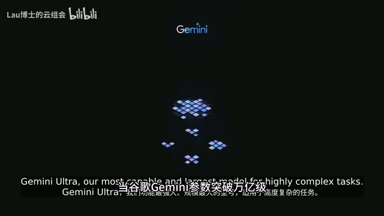
00:00:04–00:00:08 · 画面 00200:00:08–00:00:12 · 画面 003
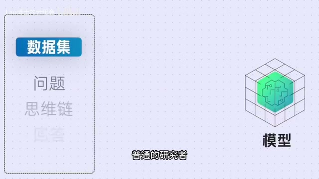
00:00:08–00:00:12 · 画面 00300:00:12–00:00:16 · 画面 004
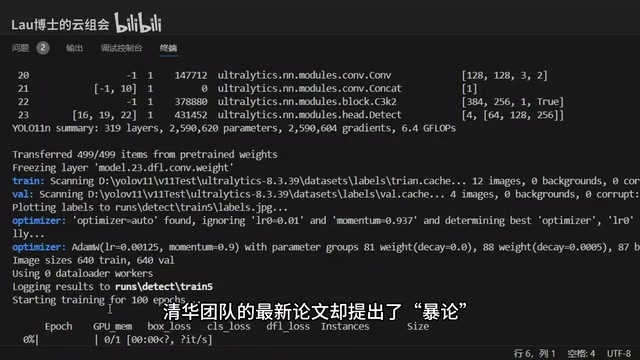
00:00:12–00:00:16 · 画面 00400:00:16–00:00:17 · 画面 005
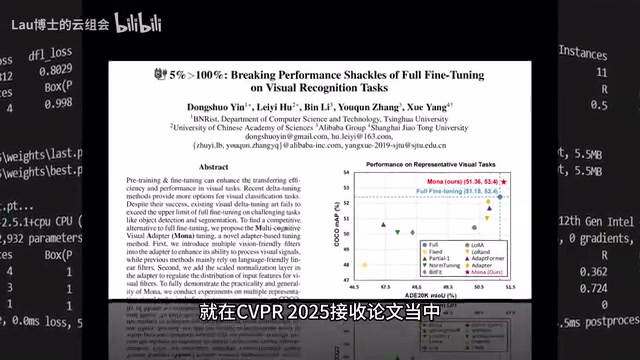
00:00:16–00:00:17 · 画面 00500:00:17–00:00:26 · 画面 006
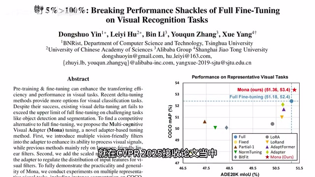
00:00:17–00:00:26 · 画面 006这个颠覆认知的视觉 adapt 即刷即用，让分类、分割、检测等视觉任务的点数统统暴涨。本期我们就来拆解这个改写微调规则的 CPR 高分论文，看 5%是如何大于 100%的。本期呢，是我们论文精读系列的第十期，非常感谢大家的支持。我们每周呢，都将至少有一篇高质量的论文精读发布出来，让各位同学每周都有新的论文可以学习。欢迎关注我们，成为云组会的一员。
00:00:26–00:00:27 · 画面 007
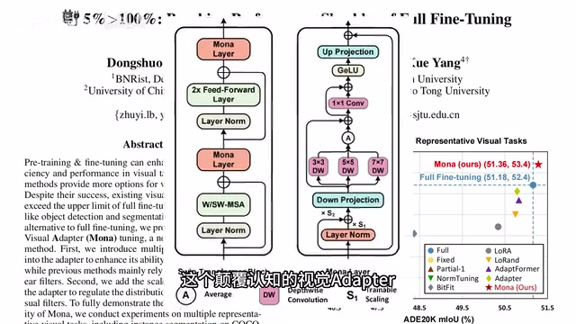
00:00:26–00:00:27 · 画面 00700:00:27–00:00:31 · 画面 008
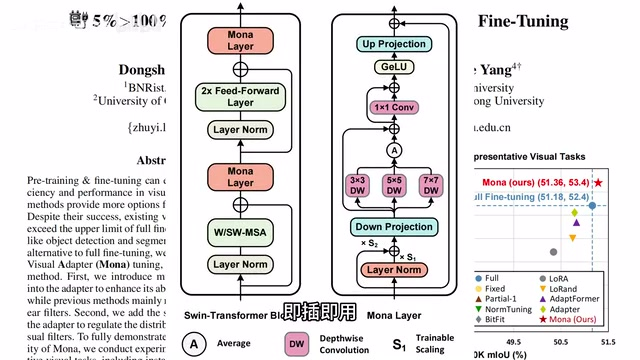
00:00:27–00:00:31 · 画面 00800:00:31–00:00:33 · 画面 009
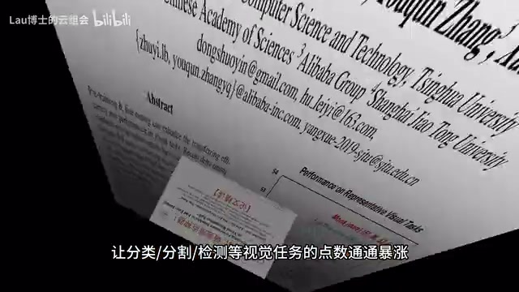
00:00:31–00:00:33 · 画面 00900:00:33–00:00:39 · 画面 010
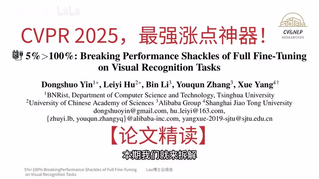
00:00:33–00:00:39 · 画面 01000:00:39–00:00:40 · 画面 011
00:00:39–00:00:40 · 画面 01100:00:40–00:00:51 · 画面 012
00:00:40–00:00:51 · 画面 01200:00:51–00:00:55 · 画面 013
00:00:51–00:00:55 · 画面 01300:00:55–00:00:57 · 画面 014
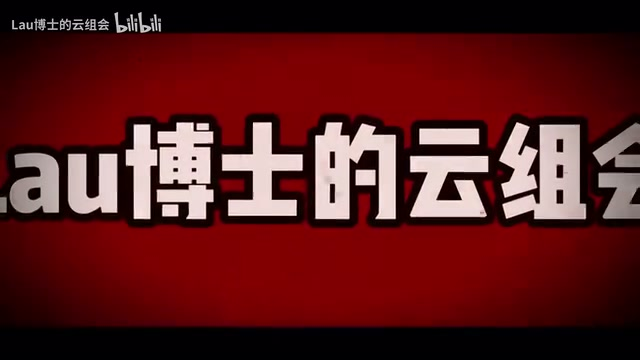
00:00:55–00:00:57 · 画面 01400:00:57–00:01:00 · 画面 015
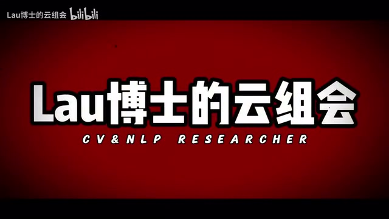
00:00:57–00:01:00 · 画面 015今天我们要介绍的这篇文章是关于计算机视觉领域当中预训练模型的微调研究论文它的题目叫 5% More than 100% Weakening Performance Shackles or Full-time Tuning on Visual Recognition Tasks 这篇文章的机构分别是新华、中科院、阿里巴巴以及上海交大这篇文章提出了一种新的微调方法叫 Monotuning
00:01:00–00:01:36 · 画面 016
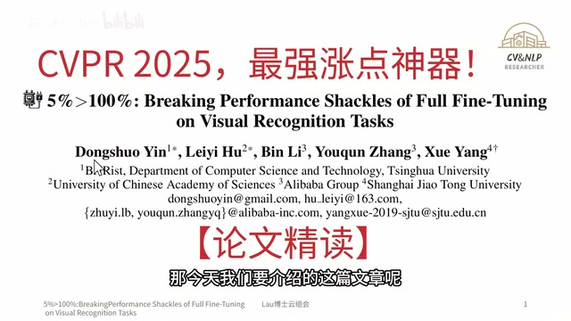
00:01:00–00:01:36 · 画面 016它在多种视觉任务上面超越了传统的全微调的方法。接下来我们一起来看一下这篇文章的详细的细节。在正式进入主题之前，我们先来了解一下这篇文章的目录。这篇文章主要分为五个部分，首先是研究背景，介绍了预训练以及微调范式在计算机视觉当中的应用。接着是研究动机，阐述了为什么要提出这么一种新的微调方法。
00:01:36–00:01:37 · 画面 017
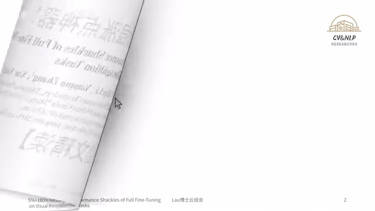
00:01:36–00:01:37 · 画面 01700:01:37–00:02:14 · 画面 018
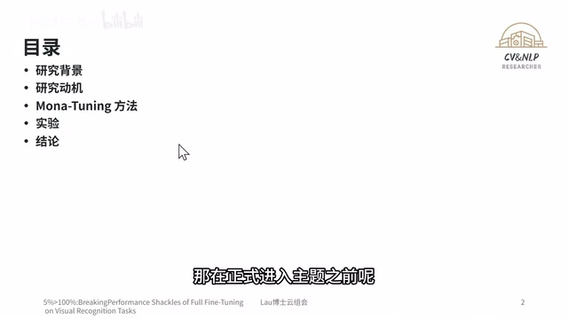
00:01:37–00:02:14 · 画面 018然后是 monotuning 方法的详细介绍，包括它的设计以及实现。接下来是实验部分，展示了多种的视觉任务上面的实验结果。最后是结论，总结了这项研究的贡献及未来的方向。接下来我们将从研究背景开始，逐步的深入。
00:02:14–00:02:15 · 画面 019
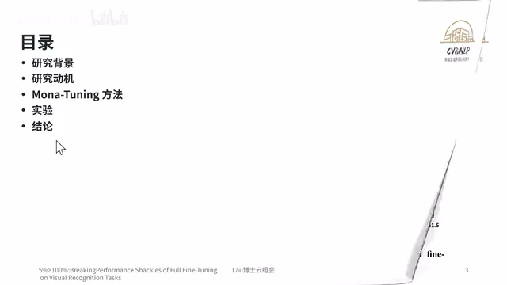
00:02:14–00:02:15 · 画面 01900:02:15–00:03:25 · 画面 020
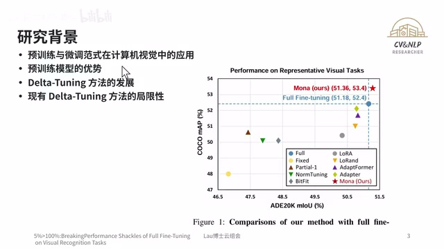
00:02:15–00:03:25 · 画面 020在第一章研究背景部分，作者就介绍了预训练跟微调方式在计算机实学跟自然语言处理中的应用。预训练模型通常是由职业员且经验丰富的团队进行训练，使用大量的干净数据。这些模型就可以帮助硬件跟数据受限的团队去节省大量的训练成本，并且在新的任务上面训练出表现良好的模型。然而现有的这种Delta Tuning 的方法在视觉任务里面是会收线的，尤其是在复杂的任务跟目标检测或者是分割上面，没有办法去超越权威条的新能量线。我们可以看到 Figure 1 就展示了 Molar 方法跟其他的权威条或者是其他的一些 Delta Tuning 的方法在一些具有代表性的任务上面的对比。可以看出这个图里面它的
纵坐标跟横坐标都是越大越好的。Muna 它直接就是在右上角的位置，也就是说它比其他的这些方法都要好。在研究动机的部分，作者就指出现有的视觉 delta tuning 的方法主要是依赖于语言友好的线性滤波器，而且滤波器并不适合用来处理视觉的信号。另外
00:03:25–00:03:26 · 画面 021
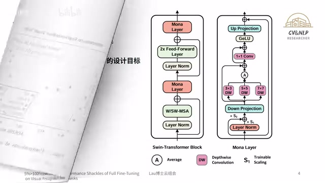
00:03:25–00:03:26 · 画面 02100:03:26–00:04:13 · 画面 022
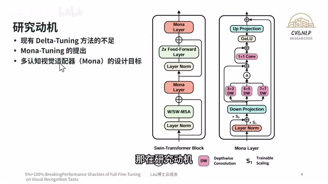
00:03:26–00:04:13 · 画面 022大多数现有的这些 Adapter 仅通过单一的线性层压缩上游的特征，这就限制了模型对不同尺度的特征的认知的能力。为了解决这些问题，作者就提出了 monotuning 的方法。他通过引用了视觉友好的卷积滤波器和缩放的硅层来增强 Adapter 处理视觉信号的能力。这种认知视觉的 Adapter 的设计宗旨是更好的去转移预训练模型中的这种视觉知识并在下午任务当中实现更好的一个性能
00:04:13–00:05:05 · 画面 023
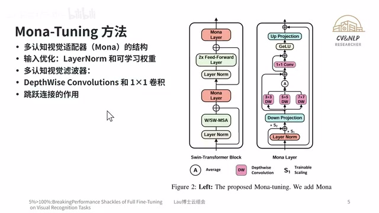
00:04:13–00:05:05 · 画面 023在 monotuning 的方法部分作者就详细的去介绍 mona 是如何设计的mona 的核心在于两个创新输入的优化跟多元值视觉的滤波器首先 mona 它就会通过一个链路node 跟两个可以学习的权重对于输入的特征进行优化来调整输入的分布并匹配到新任务的数据分布其次 mona 还会引入多尺度的depthwise convolution 和 1x1 的卷积来增强对视觉信号的处理能力图案我们可以看到 mona 的一个整体的结构以及详细的设计可以看到通过多尺度的卷积跟一些跳跃连接的设计
来提升了特征的传递和融合能力
00:05:05–00:05:06 · 画面 024
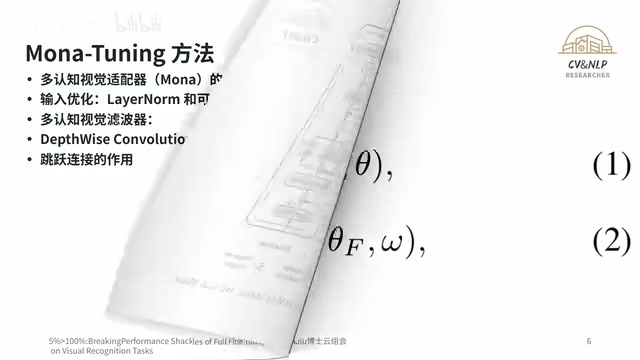
00:05:05–00:05:06 · 画面 024接下来我们要介绍 Adapter Tuning
00:05:06–00:06:33 · 画面 025
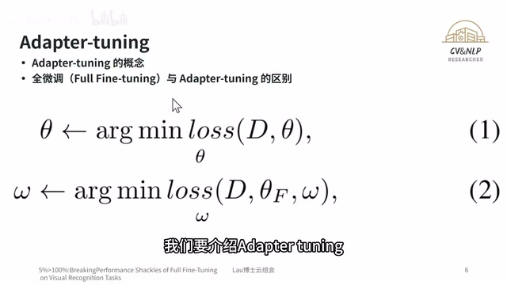
00:05:06–00:06:33 · 画面 025Adapter Tuning 在 Munituning 里面是一个重要的概念它跟传统的 Full Fine-Tuning 不一样它只会去更新 Adapter 里面的参数很显然它们两个更新的范围是不一样的权威条就顾名思义了是会对所有的参数进行更新而 Adapter Tuning 只会更新 Adapter 里面的参数那我们来看两个公式那第一个公式呢它讲的是这个Profit Tuning 的一个更新的一个过程而下面的这个公式讲的是 Data Tuning 的一个过程我们来看一下这些符号都代表的是什么意思
这个大 D 呢是指的是一个 Data Set那这个θ呢代表的是参数我们可以看得到这个球的这个最优的呢是对于整一个的这个θ的一个参数而言球的最优的是对于这个θ的而下面的这个我们来看看每个参数的意思这个θf 代表的是预训练里面所有的这种固定的这个参数那后面的这个ω呢代表的是可训练的一个参数那跟上面的是类似这个 D 呢也是数据集的意思那在下面的这个公式 2 里面呢被训练的这个参数呢只有这个ω的这个部分所以呢它这个公式 2 跟公式 1 啊它是有本质的有本质上的一个区别的
00:06:33–00:06:34 · 画面 026
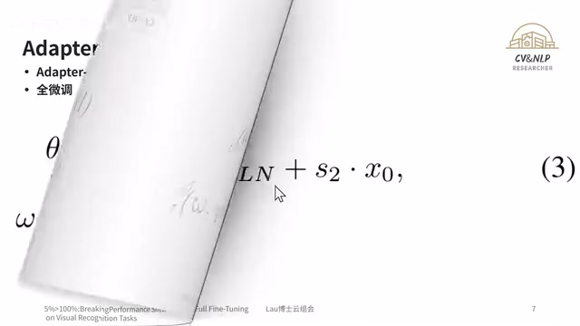
00:06:33–00:06:34 · 画面 026那同样呢
00:06:34–00:07:16 · 画面 027
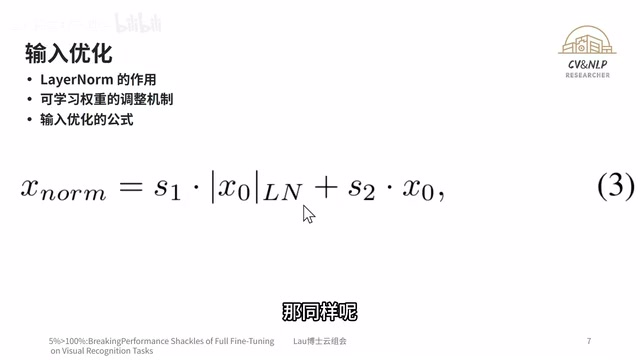
00:06:34–00:07:16 · 画面 027输入优化呢也是布纳图宁里面的一个重要的步骤那在布纳图宁的顶部呢这个 LayerNorm跟两个可学习的权重 SS2 呢是用来调整这个输入特征的分布的这个列轮呢它的作用呢是稳定前向传播的输入分布和反向传播的梯度那以下呢就是这个公式 3 它呢 mona 呢就可以通过动态的去调整这个输入的特征的比例和偏移呢让它来更适合的去适配这个下游任务这种机制就能够使得 Mona 能够更好地适应新的任务的数据分布来提升整体模型的性能多认知视觉滤波器也是 Mona Tuning 的一个创新性的设计我们主要是通过公式来了解一下它到底具体描述了一些什么样的内容 FDW 代表的是
00:07:16–00:07:17 · 画面 028
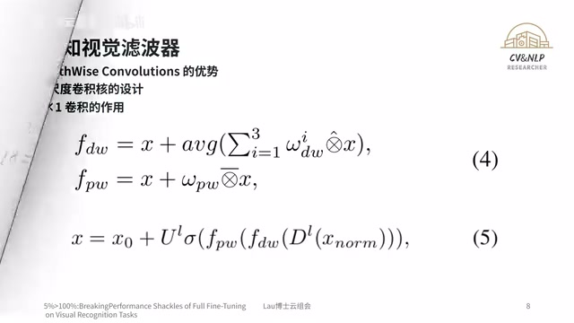
00:07:16–00:07:17 · 画面 02800:07:17–00:08:44 · 画面 029
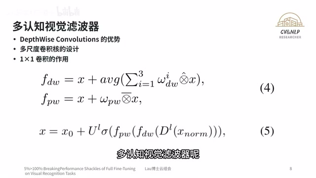
00:07:17–00:08:44 · 画面 029Deep Vice 卷积以后的特征的一个结果那这个 X 呢就是输入那这个输入它是经过下投影 DL 跟 Layer Run 处理以后的一个特征那后面的这个一个球核呢它球的意思呢是这个 W 上标 I 下标 DW 呢代表的是这个 Deep Vice Convolution 的核的这个权重那它有三个尺寸分别是 3x3 5x5 以及 7x7 那这一个呢这个符号呢这个是有这个带上标的那代表的是 depthwise 的这个 convolution 的一个操作那求平均啊 average 然后再做一个加法那这个下面的这个 pw 呢也就是我们刚刚提到的 pointwise 的 convolution 以后得到的 feature 的一个结果那它呢就是 x 加上那这个 omega pw 下标那顾名思义啊那就是 pointwise 的 convolution 的一个权重
那上面的这个上标这个操作呢它就是一个 pointwise 的一个操作那然后跟上 X 接下来我们来看公式五那公式五呢它是描述了这个 mona 块整体的一个计算过程那我们可以看得到啊那在这里呢这个 X0 它是 mona 块的这个原始的输入特征来自了这个预训练模型的一个输出那
00:08:44–00:08:55 · 画面 030
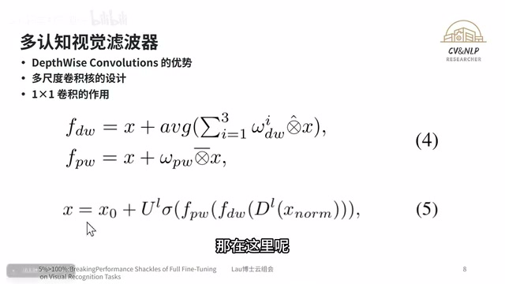
00:08:44–00:08:55 · 画面 030接下来我们来看 XlongXlong 就是通过 LayerNorm 跟可学习权重的 X1 跟 X2 调整以后的一个输入的特征。DL 就是将 Xlong 压缩到一个比较低的维度，它是一个下投影的操作来减少计算的复杂度。
00:08:55–00:10:04 · 画面 031
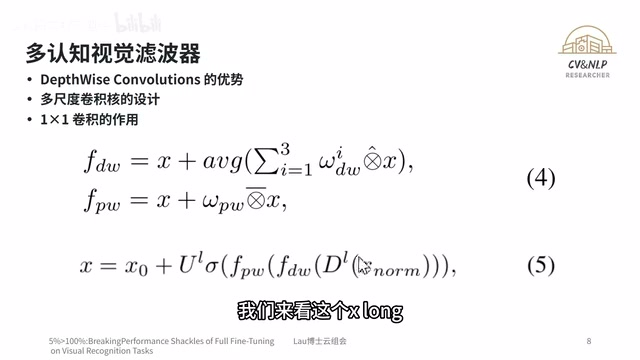
00:08:55–00:10:04 · 画面 031这个 FDW 呢也就是我们刚刚提到的这个多尺度的一个 Deepwise Convolution 的一个操作来得到这个特征的一个信息然后它是有三个尺度因为它是这个多尺度的 Deepwise 的一个 Convolution 然后去取这个平均值也就是公式式的内容那这个 FPW 呢也就是下面的这个 FPW 的就是这个 Pointwise 的这个 Convolution 的一个结果那么再看啊那这个 Rule 就是 G Rule它是一个计划函数然后这个 ul 上标 l 它是一个上投影是用来恢复到原始的维度降特征确保了这个输出的特征跟输的特征要有相同的维度
00:10:04–00:10:05 · 画面 032
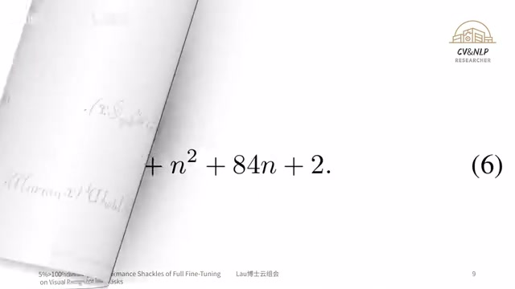
00:10:04–00:10:05 · 画面 032那参数分析呢肯定也是 Muna 这个方法一个重要的一个内容因为呢它主打的就是一个低参数量的一个设计那我们来看一下它到底有什么样的一个低参数量那这个公式六呢它就描述了整体的一个参数量的一个总和那 Muna Tuning 的这个方法里面呢它的参数呢主要就是来自 LayerNorm
00:10:05–00:11:16 · 画面 033
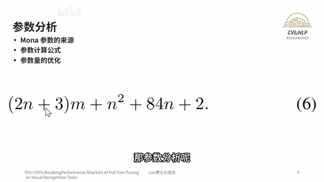
00:10:05–00:11:16 · 画面 033可学习的权重线性成 depthwise convolution 以及 pointwise convolution 那这个我们来看这两个字母啊代表的是什么意思那后面的这个 M 呢代表的是适配器的输入尺寸那这个前面的这个 M 呢代表的是下投影以后的一个尺寸也就是这个适配器输入的下投影后的一个尺寸那直观的来看呢实际上它最大的一个操作数也就是这个 M 方那其他的都是一些一次的这种级别的一个参数量，那可以看到啊，作者呢他在原文里面呢他也提到，他把这个 N 呢还去设置成了一个参数 64，那说明了实际上他的这个参数量是非常非常的低的。那接下来呢就进入到了实验的部分，那作者呢在多个具有代表性的视觉任务上面都进行了实验，那实验呢用 Swin Transformer 作为预训练模型，并在多个极限上面呢进行了对比
00:11:16–00:11:17 · 画面 034
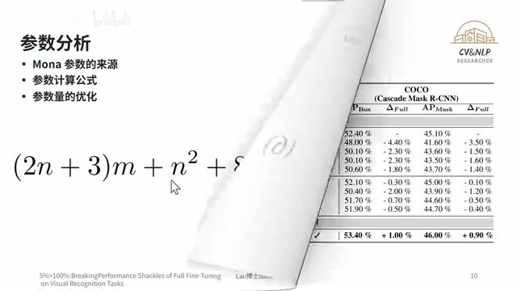
00:11:16–00:11:17 · 画面 03400:11:17–00:11:29 · 画面 035
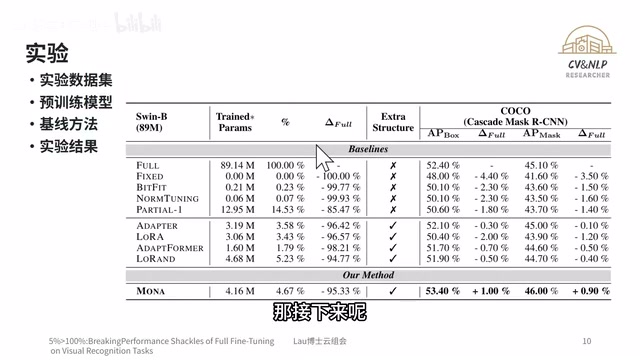
00:11:17–00:11:29 · 画面 03500:11:29–00:11:30 · 画面 036
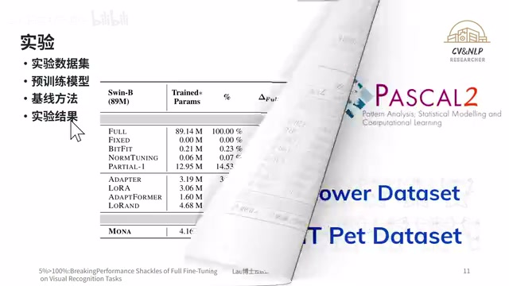
00:11:29–00:11:30 · 画面 036我们来看一下作者都选择了哪些数据集，首先是 COCO 数据集，COCO 它是一个大规模的实际分割数据集，ADE20K 是经典的语义分割的数据集，PASCAL VOC 是一个目标检测数据集，DOTA 跟 STAR 是
00:11:30–00:12:04 · 画面 037
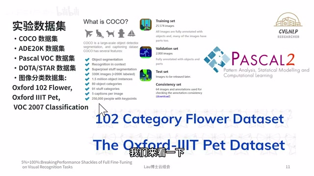
00:11:30–00:12:04 · 画面 037目标检测任务的数据集，还有三个图像分类的数据集，它们分别是 Oxfo-102 FlowerOxfo-3T-Pen 以及 VOC-2007 Classification。那些数据集涵盖了多种的视觉任务，能够全面的去验证 monotuning 的方法的泛化性。在预训练模型上面，作者选择了经过 Infinite 22K 数据集预训练的 String Transformer
00:12:04–00:12:25 · 画面 038
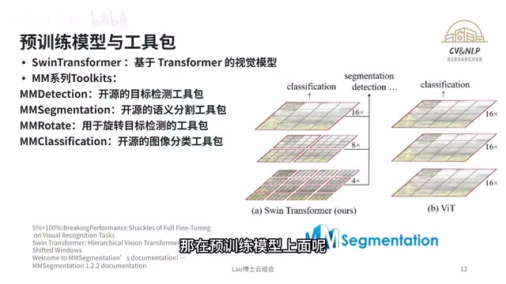
00:12:04–00:12:25 · 画面 038在工具包上面，作者选择了四个 MMC 的 Tool Key，分别是 DetectionSegmentationRotate Classification。这些是跟前面说提到的这些数据集是所对应的。为了验证 Modal Tuning 的有效性，作者跟多种的极限方法进行对比，这些方法包括全围条，固定围条，Big FitNo TuningPuzzle 1
00:12:25–00:12:26 · 画面 039
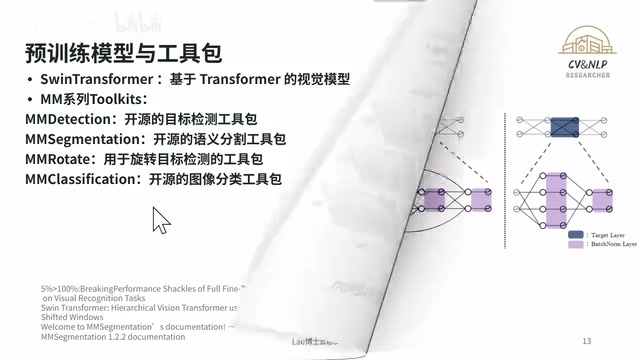
00:12:25–00:12:26 · 画面 03900:12:26–00:12:43 · 画面 040
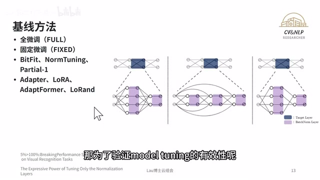
00:12:26–00:12:43 · 画面 040Adapter, Lure, Adapterformer 以及 Luren 那接下来呢我们一起来看一下 mona 到底在实验上它的表现具体如何首先看 coco 数据集那我们可以看到呢首先这个是一个 swing transformer B 作为一个 G 模型然后呢我们要关注的是这个 train 的这个 parameter 那这个 train 的 parameter 呢 mona 的话它是一个在中间的一个水平是四点几当然也算是比较好的一个效果了
00:12:43–00:13:31 · 画面 041
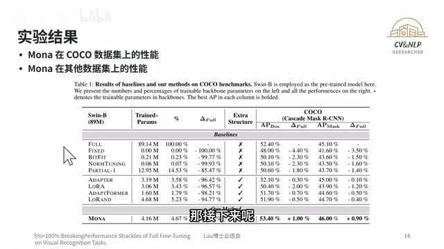
00:12:43–00:13:31 · 画面 041然后重点就是看 AP BOX ，DELTA FOOLAP MASK 还有 DELTA FOOL 就是这四个指标。那在这四个指标里面，它都是去跟这个数去进行一个比较，也就是跟 FOOL 去进行一个比较。我们可以看到其实只有 MONA 相比 FOOL 的这个是有提升的，其他的这种微调或者说是其他的一些策略它都是
00:13:31–00:13:33 · 画面 042
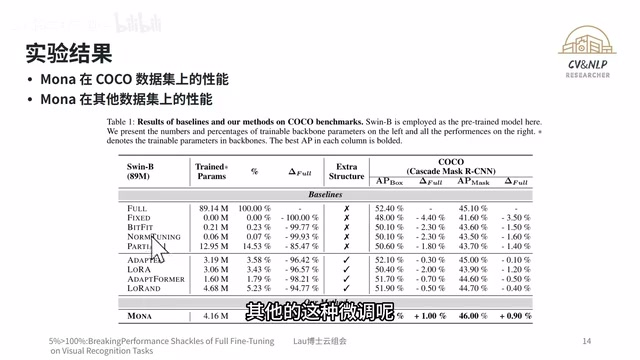
00:13:31–00:13:33 · 画面 04200:13:33–00:13:50 · 画面 043
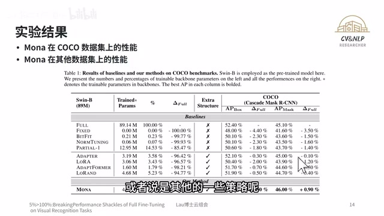
00:13:33–00:13:50 · 画面 043一个下降的一个趋势。那也就是印证了跟前面所提到的很多的这些微调的这个方法很容易就会出现这种过拟合的一个现象。那这个也证明了这个 mona 呢它确实是有点东西。那接下来呢 table2 呢就是在 PASCAL VOC 跟 ATK20k 这两个任务上面的一个表现。我们可以看到啊，直接看这个 delta4 这两个 delta4 也是越大越好
00:13:50–00:13:53 · 画面 044
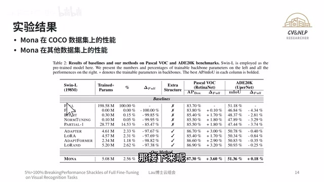
00:13:50–00:13:53 · 画面 04400:13:53–00:13:55 · 画面 045
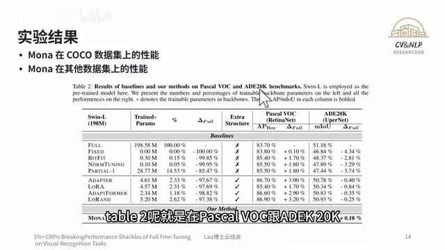
00:13:53–00:13:55 · 画面 04500:13:55–00:14:04 · 画面 046
00:13:55–00:14:04 · 画面 046我们来看实际上在 PASCAL VOC 里面有几个像 Adapt 还有 LoRand 他们实际上他们的提升的幅度也超过了 3%但他们在 AD20K 里面是一个下降的趋势。在这么多个这种方法里面只有 Mona 它是正向而且是达到了一个最高的提升水平的
00:14:04–00:14:07 · 画面 047
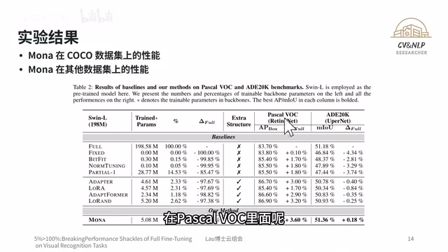
00:14:04–00:14:07 · 画面 04700:14:07–00:14:08 · 画面 048
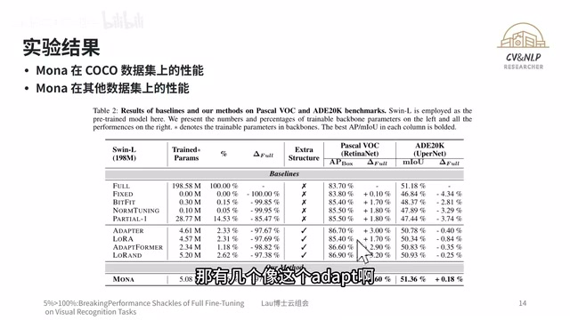
00:14:07–00:14:08 · 画面 04800:14:08–00:14:15 · 画面 049
00:14:08–00:14:15 · 画面 04900:14:15–00:14:30 · 画面 050
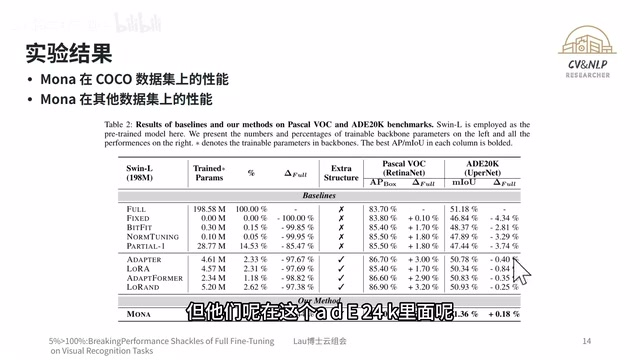
00:14:15–00:14:30 · 画面 05000:14:30–00:14:31 · 画面 051
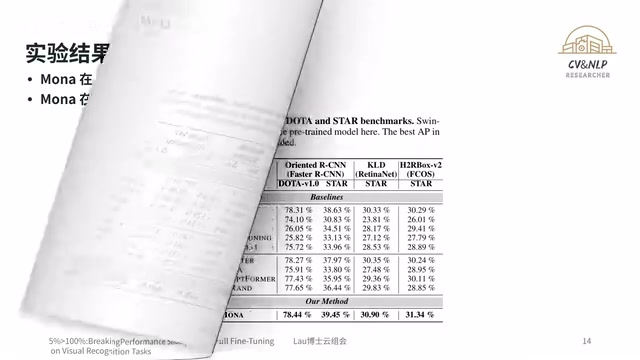
00:14:30–00:14:31 · 画面 051那在 Table 3 里面呢它是对于 Dota 跟 Star 两个数据集去做了一个评估。那实际上我们可以看得到啊，在这些数据里面呢能跟 Mona 比的只有这个 Foo 还有这个 Adapt 他们的数据是比较亮眼的。那 Mona 呢依然是领先的，而且呢相较于这个 Foo 虽然它的提升的幅度并没有那么大，但相比了 Foo 它的这种训练成本的高那 Mona 还是非常有优势的
00:14:31–00:14:40 · 画面 052
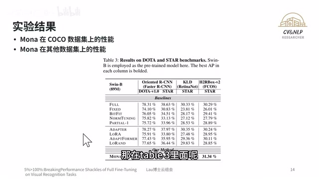
00:14:31–00:14:40 · 画面 05200:14:40–00:14:41 · 画面 053
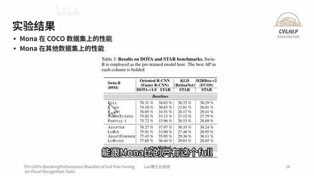
00:14:40–00:14:41 · 画面 05300:14:41–00:14:45 · 画面 054
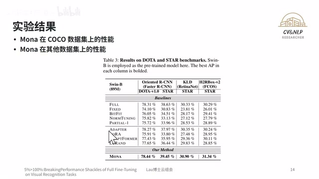
00:14:41–00:14:45 · 画面 05400:14:45–00:14:48 · 画面 055
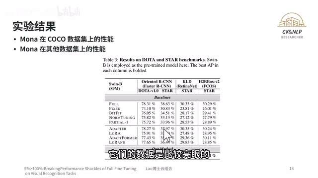
00:14:45–00:14:48 · 画面 05500:14:48–00:14:59 · 画面 056
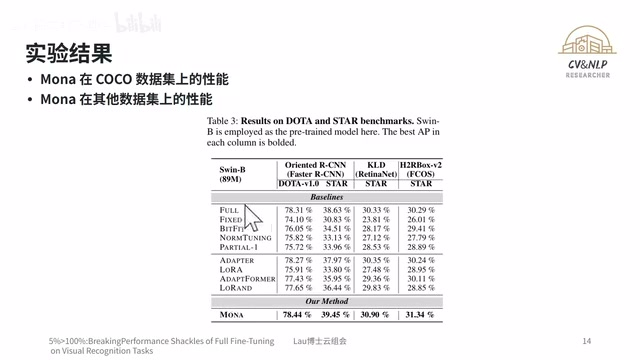
00:14:48–00:14:59 · 画面 05600:14:59–00:15:00 · 画面 057
00:14:59–00:15:00 · 画面 057接下来我们看到 table4table4 呢那就是关于 classification 的这个评估了。那我们可以看得到实际上那在 classification 这个问题上面呢大家的差距就并没有那么大了，都是零点几里面的一个比较。所以呢我觉得它在这个层面上它更多的就是说它的这个方法它是
00:15:00–00:15:09 · 画面 058
00:15:00–00:15:09 · 画面 05800:15:09–00:15:12 · 画面 059
00:15:09–00:15:12 · 画面 05900:15:12–00:16:00 · 画面 060
00:15:12–00:16:00 · 画面 060没有问题就是 Word 但是你说它有更大的一个优势可能它不在性能上面它还是在这种参数量上面它的优势会更显著当然它在 Average 上面它依然是领先的大致上会比第二好的其实也没有领先太多了 0.1 不到领先的是 0.1 不到那这个的 Top 5 的话呢也是类似的 0.0 几了那所以这个整体上来看呢 Mona 跟其他的一些方法在性能上没有拉开很大的差距那当然它在参数上还是依然有优势的那在收点速度的比较上呢 Mona 呢也是很有优势的
00:16:00–00:16:01 · 画面 061
00:16:00–00:16:01 · 画面 06100:16:01–00:16:22 · 画面 062
00:16:01–00:16:22 · 画面 062我们可以看到图 3 上面它是一共有 6 种方法，莫朗相比于其他的 5 种方法，无论是在 300 个 interaction 还是在 1800 个 interaction 它都一直是领先于其他方法的。说明它在收敛速度上也是非常有优势的
00:16:22–00:16:23 · 画面 063
00:16:22–00:16:23 · 画面 063那为了进一步去验证这个 Mona Tuning 的方法的有效性呢，作者呢还做了这个消融实验。那 Table 5 呢展示的是这个中间层的 Dimension。那这个中间层的 My Dimension 呢当它等于 64 的时候这个 AP Box 就取得了最好的一个成绩。那 Table 6 呢它就是要表明的一个观点就是说 Mona 呢在这种不同尺寸底下的 Shape 的这个或者是 Size 的这个
00:16:23–00:16:28 · 画面 064
00:16:23–00:16:28 · 画面 06400:16:28–00:16:32 · 画面 065
00:16:28–00:16:32 · 画面 06500:16:32–00:16:36 · 画面 066
00:16:32–00:16:36 · 画面 06600:16:36–00:16:37 · 画面 067
00:16:36–00:16:37 · 画面 06700:16:37–00:16:40 · 画面 068
00:16:37–00:16:40 · 画面 06800:16:40–00:16:44 · 画面 069
00:16:40–00:16:44 · 画面 06900:16:44–00:16:46 · 画面 070
00:16:44–00:16:46 · 画面 07000:16:46–00:16:55 · 画面 071
00:16:46–00:16:55 · 画面 071transformer 了 swing transformer 底下它都能有一个比较好的成绩我们在这里也可以看到了无论是三种尺寸它的效果均比它的负的情况下要高出不少终结部分
00:16:55–00:16:56 · 画面 072
00:16:55–00:16:56 · 画面 07200:16:56–00:16:57 · 画面 073
00:16:56–00:16:57 · 画面 07300:16:57–00:17:00 · 画面 074
00:16:57–00:17:00 · 画面 07400:17:00–00:17:05 · 画面 075
00:17:00–00:17:05 · 画面 07500:17:05–00:17:06 · 画面 076
00:17:05–00:17:06 · 画面 07600:17:06–00:17:34 · 画面 077
00:17:06–00:17:34 · 画面 077那作者呢提出了 monotuning 这样一种新型的视觉任务的微调方法那他通过引入了多认知视觉适配器呢显著的提升了视觉任务的性能那另外呢 monotuning 呢还有这个参数高效的特点显著的减少了参数量从而降低了存储成本那在 future world 里面呢作者呢计划进一步的去探索 monotuning 呢在更多的视觉任务上面呢去扩大它的应用并进一步呢结合其他的方法来优化它的性能
00:17:34–00:17:36 · 画面 078
00:17:34–00:17:36 · 画面 078最后我想简单的来点评一下这篇文章首先我觉得这篇文章的实验非常的全面然后像这篇文章的话我认为在理论层面并没有太多可以说的因为性能对于这篇文章来说就是最好的理论这个也启发了我在日后做研究的时候我们应该多从这种泛化性去进行考量怎么叫做在泛化性去进行考量其实非常简单就像这篇文章那样去在不同的
00:17:36–00:18:25 · 画面 079
00:17:36–00:18:25 · 画面 079层面的多个数据集里面去做实验那如果都得到了提升那说明这个研究或者说这个工作它就是具有很强的发化性的今天的云组会呢我们开到这里就结束了如果对你有启发呢感谢三连加关注如果你有什么想法呢欢迎留言我们下一期节目再见拜拜
00:18:25–00:18:25 · 画面 080
00:18:25–00:18:25 · 画面 080转写与来源说明 · 0 个自动复核提示
保留 101 个原始语音片段，0 个片段触发自动复核提示。提示仅用于定位可能的术语、重复或识别问题，不等于已确认错误。
讲解画面为源视频截图（640×360），不是可编辑 PPT 文件。全片按每秒 2 帧扫描内容变化，逐步展开页保留；连续动画保留代表画面。清晰度受源视频限制。
原视频：paper/合集_2026-10-16_论文精读/即插即用，5%100%！清华高分论文Mona 【论文精读】.mp4
SHA-256：96c693dc5cadb616abb759478dbb764927bea86a6a57448b749c26f3976e73c1
全文按视频语音与画面制作。原论文可从上方链接下载；完整资料包保留全文、原始逐字稿、字幕和校对记录。